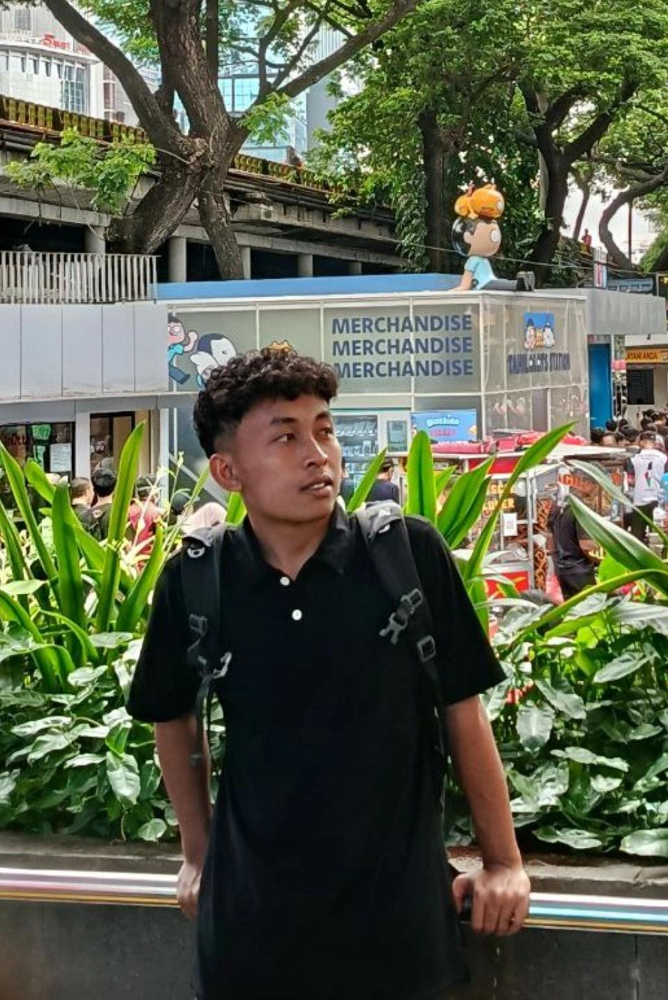

EATIK
Eatik — Pemesanan Makanan & Minuman
Aplikasi mobile untuk memesan makanan dan minuman secara praktis. Antarmuka sederhana dan user-friendly untuk berbagai kalangan pengguna.

Mahasiswa IT di PeTIK Depok yang fokus pada pengembangan aplikasi Android (Kotlin), integrasi API, dan desain UI/UX yang user-friendly — siap berkontribusi di tim produk digital.
Profil
Saya AMAM MARWA, mahasiswa di Pesantren Teknologi Informasi dan Komunikasi (PeTIK) Depok yang sedang mendalami pengembangan aplikasi mobile dan desain UI/UX.
Berpengalaman membangun aplikasi Android menggunakan Kotlin, mengelola data dengan Room/SQLite, serta menghubungkan layanan melalui REST API & JSON (Retrofit). Terbiasa merancang antarmuka di Figma sebelum implementasi di Android Studio.
Memiliki semangat belajar tinggi, kemampuan problem solving, serta nyaman bekerja secara individu maupun dalam tim — dengan pendekatan berbasis umpan balik dan perbaikan berkelanjutan.
Kompetensi
Karier & Pendidikan
Pesantren Teknologi Informasi dan Komunikasi (PeTIK Depok)
Fokus pengembangan aplikasi Android dengan Kotlin dan pengelolaan database. Membangun aplikasi Absensi dan Keuangan di Android Studio, termasuk integrasi data dan antarmuka yang mudah digunakan.
Bidang keahlian: Programming & Mobile Development
Portofolio
Aplikasi mobile untuk memesan makanan dan minuman secara praktis. Antarmuka sederhana dan user-friendly untuk berbagai kalangan pengguna.
Desain alur dari eksplorasi destinasi, detail lokasi, hingga reservasi. Prototype siap pengembangan dengan prinsip UI/UX yang konsisten.
Rekrutmen
Saya terbuka untuk posisi Junior Mobile Developer, magang, atau proyek kolaboratif. Silakan hubungi saya — respons cepat via email atau WhatsApp.
Kirim Email ke Saya